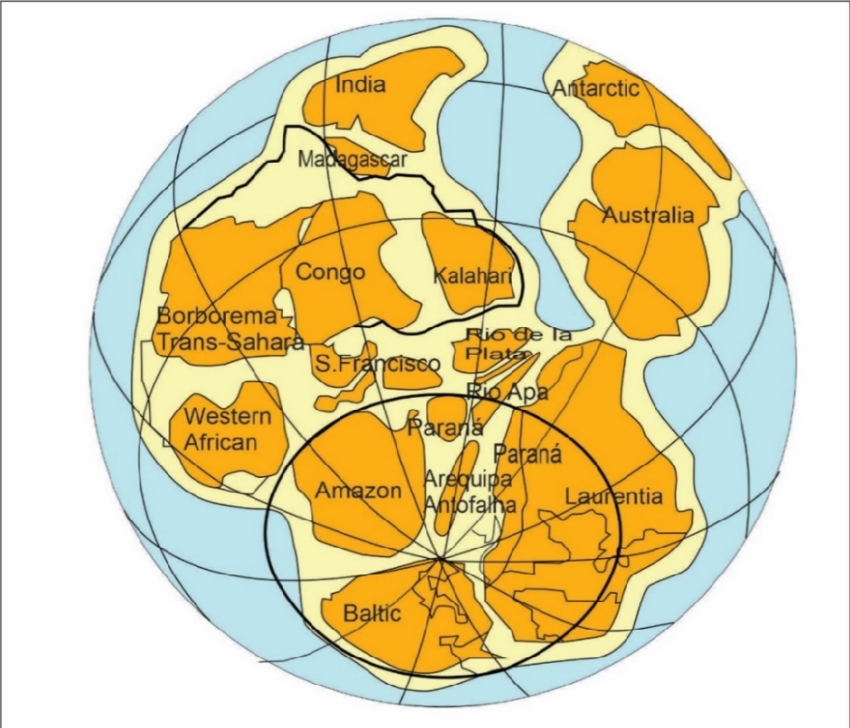

Kambriyen, Dünya tarihinde yaşamın evrimleştiği en kritik dönüm noktalarından biridir. Paleozoyik Zaman'ın ilk periyodu olan bu dönem, karmaşık çok hücreli organizmaların aniden ortaya çıkması ve biyolojik çeşitliliğin hızla artmasıyla karakterize edilir. Bu evre, modern yaşam formlarının atalarının kökenini barındıran devasa bir evrimsel laboratuvar niteliğindedir.
Kambriyen Patlaması ve Ekosistemlerin Şekillenmesi
• İklim ve Coğrafya: Genellikle sıcak ve istikrarlı bir iklimin hüküm sürdüğü bu dönemde buzul çağlarına rastlanmaz. Süper kıta Pannotia'nın parçalanmasıyla yeni okyanus havzaları oluşmuş ve organizmaların yayılımını kolaylaştıran kıtasal sınırlar yeniden düzenlenmiştir.
• Flora (Deniz Bitkileri): Karasal bitki örtüsü henüz evrimleşmemiş olsa da denizlerde algler ve basit bitki benzeri organizmalar ekolojik çeşitliliğin temelini oluşturmuştur.
• Canlı Çeşitliliği: "Kambriyen Patlaması" olarak bilinen süreçte; Trilobitler, deniz süngerleri, yumuşakçalar ve ekinodermler gibi sert kabuklu ve karmaşık yapılı canlılar ilk kez bol miktarda ortaya çıkmıştır.
• Evrimsel Miras: Yaşamın okyanus derinliklerinden farklı ortamlara hızla yayıldığı bu dönem, sonraki çağlardaki biyolojik karmaşıklığın temelini atmıştır.

Kambriyen Dönemi'nin başında parçalanmaya başlayan Pannotia süper kıtasının kara parçalarını gösteren jeolojik harita.